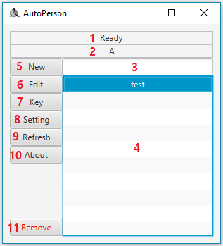

今回はMain Pageについて調べて見ましょう。
下に見える場面がMain Pageです。

| 番号 | 説明 |
|---|---|
| 1 |
実行ステータスが表示されます。 "Ready"は実行中のスクリプトがないという意味です。 緑字でファイル名が表示されたらそのスクリプトが実行中という意味です。 |
| 2 |
選択したスクリプトのスタートボタンが表示されます。 スタートボタンを押すとそのスクリプトが実行されます。 スクリプトが実行中の時同じスタートボタンをもう一度押すとそのスクリプトが終了されます。 スクリプトが実行中の時他のスタートボタンを押すと実行中のスクリプトが終了されて新しいスクリプトが実行されます。 |
| 3 | ファイルの検索ができます。 |
| 4 |
ファイルリストです。 scriptフォルダーにある全てのテキストファイルが表示されます。 リストはアルファベット順に整列されます。 |
| 5 | 新しいファイルを作ります。 |
| 6 |
選択したスクリプトを修正するボタンです。 ボタンを押すとEdit Pageへ移動されます。 |
| 7 | 選択したスクリプトのスタートボタンを設定します。 |
| 8 | Setting Pageへ移動します。 |
| 9 | スクリプトリストのリフレッシュボタンです。 |
| 10 | About Pageへ移動します。 |
| 11 | 選択したスクリプトを削除します。 |